小小的Allen呀，不知不觉18岁就到了呢。过去的时光，不知道多少次，晚上望着黑黑的天花板，或者是楼下照进来的灯光，企盼着18岁的到来。望着不同天花板，你从小时候住在爸爸妈妈的房间里；再到住在包家巷二楼，每晚听着楼下货车的发动机声；再到初中住在学校宿舍里和室友们谈天说地，聊着自己未来的路；接着再到高中每天挑灯夜战，听见过深夜的雨声，聆听过黎明前的鸟叫；现在，你在离自己生活了18年的地方，距离整整3261.966KM。晚上，看着陌生的天花板，这，是一个新的开始。
小时候，幻想着18岁的时候，我可以登dua郎，做自己想做的事情（我不会说18岁可以随便玩游戏的哈哈哈）。还记得初中的时候，抱着家里面很老很老的电脑，720p的笔记本显示器，在那里玩火线精英（不是软广哈哈哈），20帧电竞。直到2020年，要求实名认证开始，那段时间就每天盼着18岁能够早点到来，数着一天两天。。。哈哈哈。
现在18岁了，但是好像也没有想象中的那么激动，或许，在我看来当时盼着满12岁时更加的激动（当时特别想骑共享单车，也不知道为什么哈哈哈）。这个生日，或许将会是我人生中最重要的，但是，18年来，这一次，也是迄今为止第一次，在离家这么远的地方，度过这一时刻。（有点伤感，但毕竟也不是孤身一人在外，我现在还有这么多的朋友在身旁，很知足啦）
没有想象中的激动，却多出了一些意料之外的烦恼。18岁，并不是一个固定的数字，而是一个象征着心智成熟的年纪。从来没有想过，一个人会被烦恼所困住，小时候所认为的烦恼，或许，在我现在看来，就像是那首诗里面写的：少年不识愁滋味，爱上层楼。爱上层楼，为赋新词强说愁。而今识得愁滋味，欲说还休。欲说还休，却道天凉好个秋。
现在，我的身边，好像都是些很厉害的人，雅思口语7分，拿过数学竞赛省一，进过省队，学过化竞，学过物竞。。。突然感觉到自己的弱小，好像自己从前的努力，取得的成果，在这些人面前不值一提。感觉自己有点卑微，或许，我应该自信一点呢？自己曾经想这么安慰自己，但好像又没法说服自己，害~。在新加坡，一个全新的环境，说我不孤独，那肯定是假的，这几天，和初中的，高中的，特别好的两个朋友打了电话，每次都舍不得挂掉，打了两三个小时。心中还有些别的烦恼的事情，伤心的事情，这里就不说啦。害害害，说这么多，不要传播负面情绪了。欸，写到这里，我在想，是不是因为我太要强了，喜欢把自己和别人比较？害害害不说了不说了，越想越多。
一月份，这一次的成都市调考，超常发挥，取得了班上的第一名，成都市前150（还有4分给我多扣了，意难平，加上就前100了），小小得意，被lzg亲切地关注了哈哈
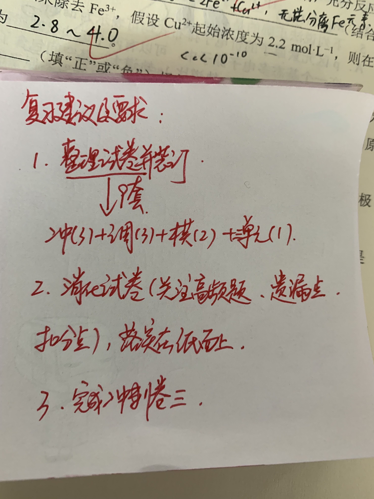
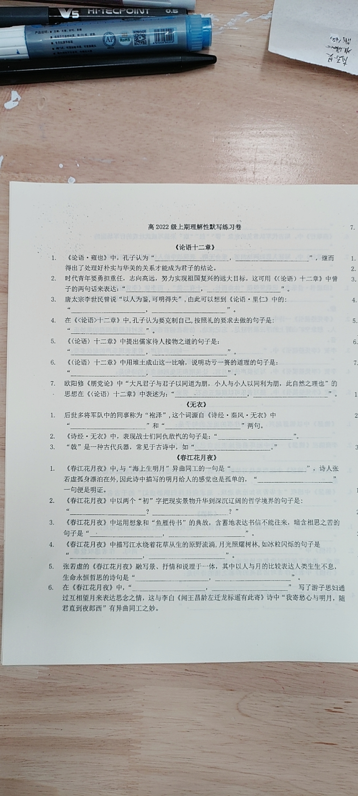
二月份，寒假，报名了数学强基课程，学不懂思密达，有点难，笔记倒是写了一大堆，一本书都写满了
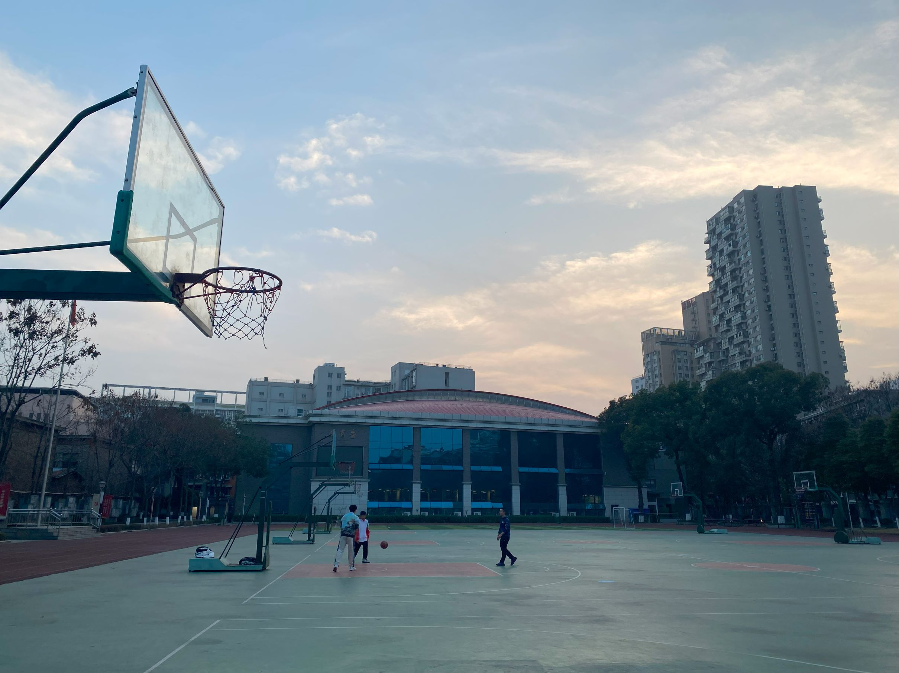
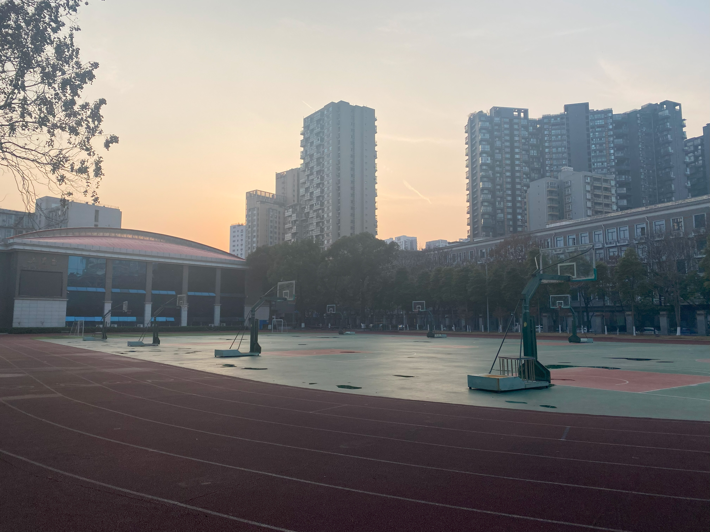
三月份，开学了，上学期考好了，有点飘连续两次100多名，lzg有点不开心。
四月份，有我参与组织的中文戏剧节，我们班拿了第一！！！好耶
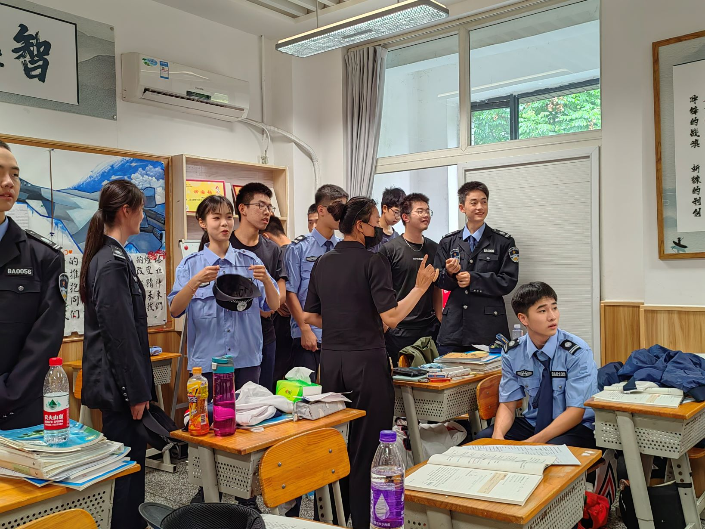
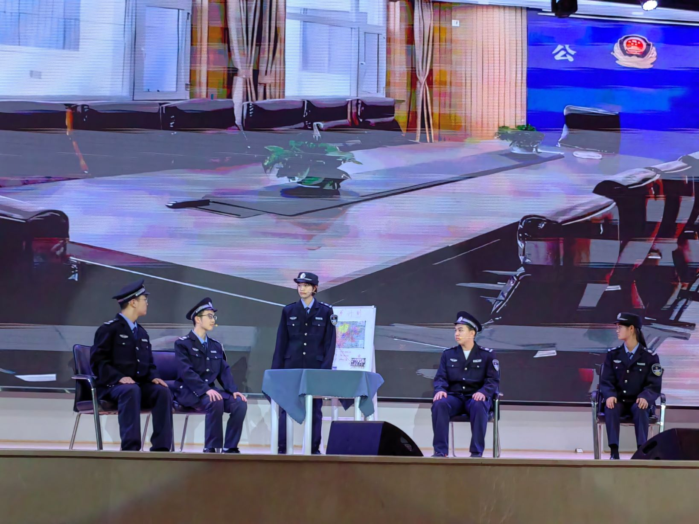
五月份&六月份，报名了Singapore的项目，心里面东想西想，有点乱，后面的考试都有点烂呜呜呜，，五一去看了安赛龙打球
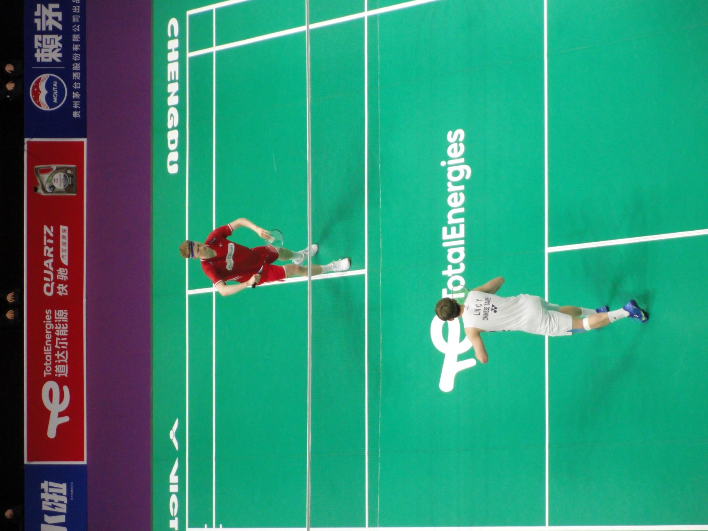
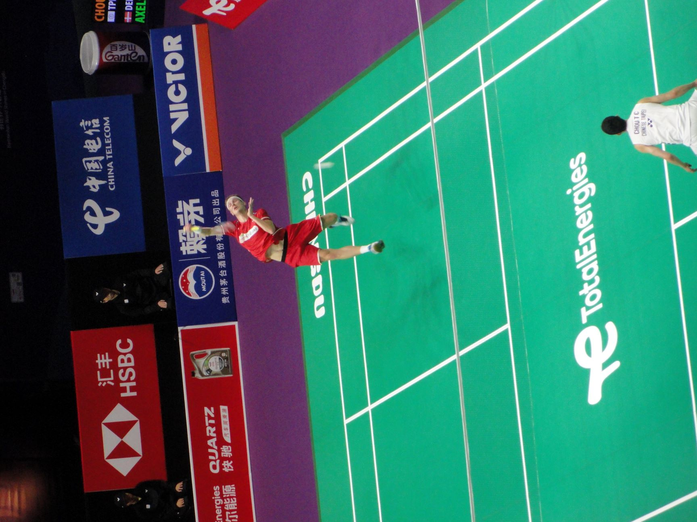
七月份，期末考还是烂，只不过没有前面烂，心好像没那么乱了，去到协进上了两周课
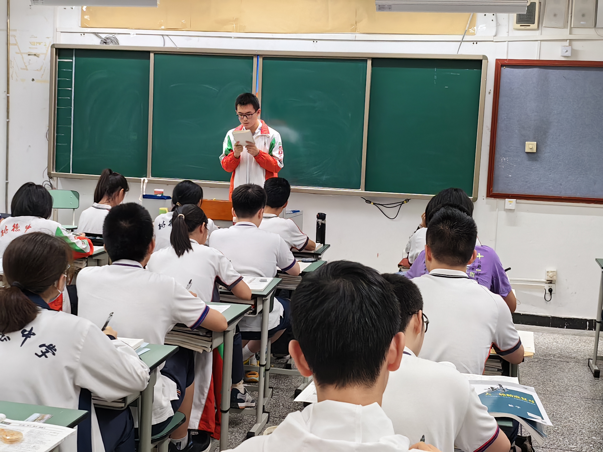
十月份，阶考考的也挺好的，30多名，开心。还一起去爬了青城山。21号收到offer啦，开心，但是好舍不得三班的同学们
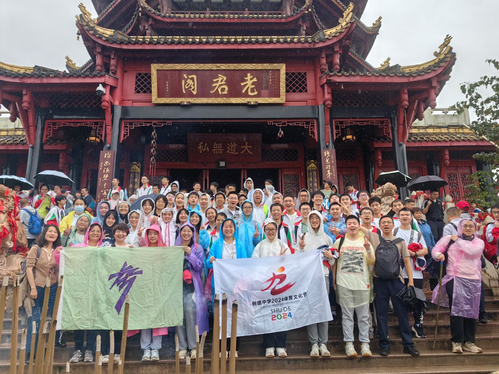
十一月份，去上雅思课，学习英语，挺充实的（心情特别好），还去了黑水县玩了两天
十二月份，一个人在家，时不时去图书馆看看资料，有点失落（呜呜呜，有伤心事），走之前和姐姐玩了三四天，看了看电影，去毕棚沟玩了一次
一月份till now，新的生活，但我好像开心不起来，有点心事害。哇哇哇，发泄一下就好了吧。
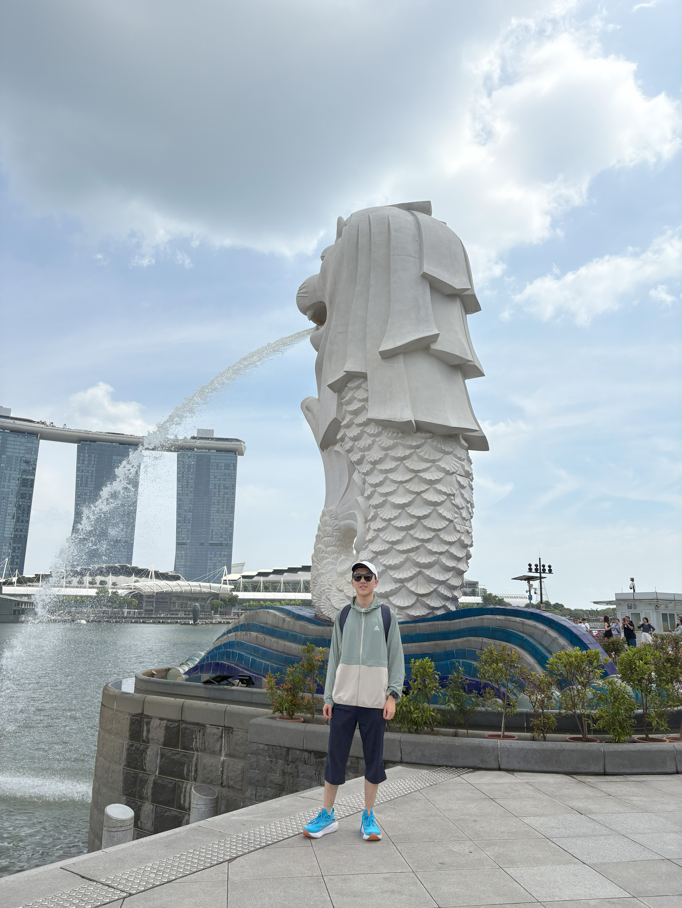
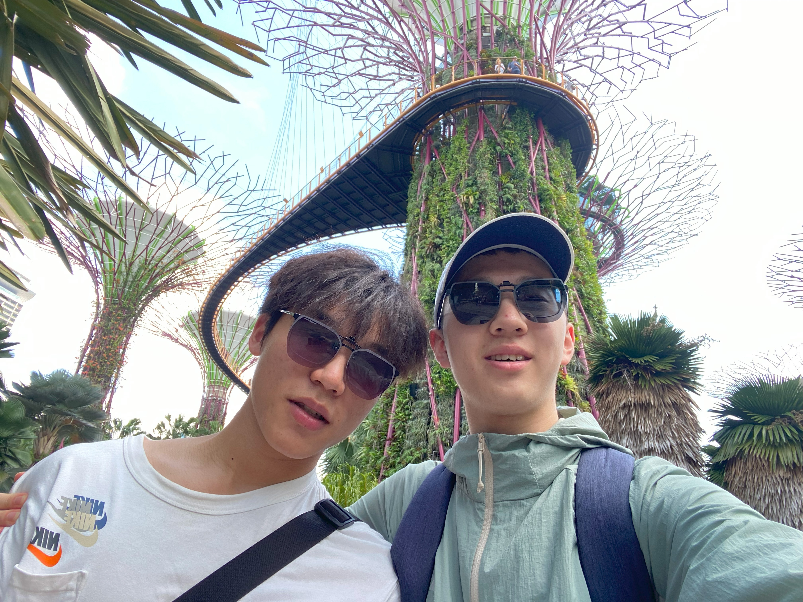
18岁，marks一个新的beginning（唔，语言系统好像有点混乱）。今天开始，从法律的意义上，我是一个真正的成年人了，我应该，我也需要为我的所有行为担起应有的责任。请允许我许一个愿望吧，（希望能够实现啦）我能够忘记这些伤心事，或者，让这些伤心的，烦恼的事情离我远去，想成为一个快快乐乐，简简单单的人，享受生活中的每一刻，做好自己应该做的事情，并且把这些事做到完美。这个愿望，看起来有点抽象，但，I'm serious，噢，不对，昨天mentor才教我正式的地方不能缩写，I am serious（不嘻嘻）。
2025年，等待着我的先是预科的学习，今天就开始啦，刚好，是一个new beginning。希望，我能够不再赶着DDL，每天都能在合理的时间内把任务做到perfect，这样的话，成绩应该不会差吧？（害怕），害害害，口语和写作，想想办法吧（急急急）。周末空了也要有自己的生活，去体验，去enjoy生活，去Singapore到处逛逛，或许，许个愿，能有人陪我一起去。
哦哦哦，差点忘了，祝愿自己能够选到心仪的专业，虽然现在都还没想好，但，大差不差，反正和ccds关系不浅。后面的大学生活就不操心了，再想的话脑子就转不过来了（不行不行，脑子要坏了。这可不行，还得留着谈恋爱呢）（这能过审嘛？）（貌似不能）（啊啊啊无所谓了）
没有发年度总结就是因为懒，想和生日一起发了（嘻嘻）。另外，这个网页做的很烂，勿喷（手动狗头）（其实我还有很多照片，但是网页做的烂，搞不上去了额，还要调格式）（天哪，JPG和jpg还不一样，调了半天）（祝1112天天快乐）